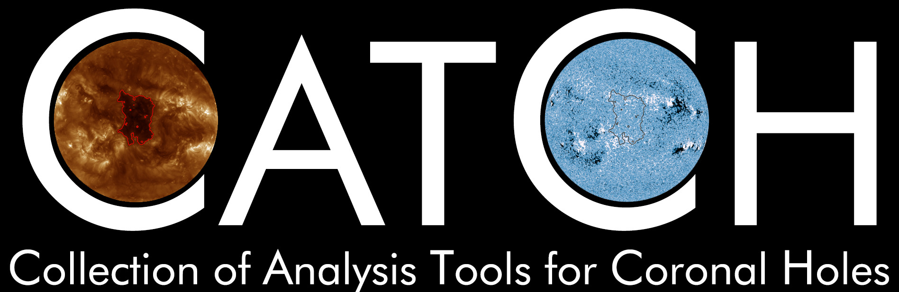

pyCATCH
Welcome to pyCATCH: the phython implementation of the Collection of Analysis Tools for Coronal Holes (CATCH; Heinemann et al. 2019)
CATCH was originally implemented in SSW IDL (See http://lmsal.com/solarsoft/ssw_install.html and http://www.lmsal.com/solarsoft/ssw_packages_info.html). It is also available on GitHub (https://github.com/sgheinemann/CATCH)
CATCH and pyCATCH were created in order to collect and structure coronal hole identification, extraction and analysis in a handy and fast way without the disadvantages of automatic algorithms. It enables the user to download and process EUV filtergrams (193/195 A) and line-of-sight (Los) magnetograms. It is able to handle data from different spacecraft missions covering the interval from 1996 until now. These include the Solar Dynamics Observatory, the Solar Terrestrial Relations Observatory and the Solar and Heliospheric Observatory.
The user can perform coronal hole boundary detection, extraction and analysis using a manually adjustable intensity threshold. Additionally the user can analyze the underlying photospheric magnetic field.
If you have any comments, suggestions or need help. Please contact the author via E-mail (stephan.heinemann@hmail.at) or leave a request on Github (https://github.com/sgheinemann/CATCH or https://github.com/sgheinemann/pycatch respectively).
You can read the documentation by opening the
doc/_build/index.html
file.
Contents:
- Getting started with pyCATCH
- Reading the documentation
- Installing pyCATCH
- Installing pyCATCH
- Initializing pyCATCH
- Dowloading data
- Loading data
- Calibrating data
- Selecting coronal hole seed point
- Setting a threshold
- Extracting the coronal hole
- Calculating coronal hole properties
- Plotting and saving coronal hole extractions
- Saving and loading pyCATCH sessions
- Example
- pycatch Package Documentation
- Changelog
References
Heinemann, S.G., Temmer, M., Heinemann, N., Dissauer, K., Samara, E., Jerčić, V., Hofmeister, S.J., Veronig, A.M.: 2019, Statistical analysis and catalog of non-polar coronal holes covering the SDO-era using CATCH. Solar Phys. 294, 144.